01. The real problem
The real problem wasn't "making insurance friendly".
Initially, the project seemed simple: Be Group sought a new revenue line for Digital Goods, MSIG needed distribution, and drivers required road protection. Personal Accident Insurance aligned all three.
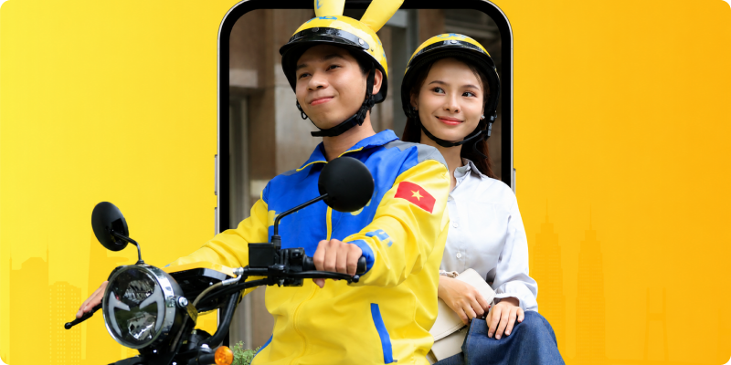
But there was a massive disconnect. Traditional insurance expects salaried buyers with stable cash flow and a tolerance for annual lump-sum payments. Gig drivers earn day-to-day. They manage their wallets day-to-day. They learned that long-term financial commitments often cost them. If we sold insurance traditionally - annual purchase, paper claims - they wouldn't buy it. A failed payment or clumsy claim would ruin trust.
How might we redesign the trust system to better reflect the realities of a gig driver's life, beyond just focusing on
UI aesthetics?
02. Research
The data told one story. Talking to drivers told another.
Before sketching anything, I needed to understand one thing I couldn't find in any dashboard:
What actually makes these drivers hesitate?
None of them fit gig workers
Shopee, Momo and IZion24 all sold embedded insurance in Vietnam. The scan showed the gap was structural, not cosmetic.
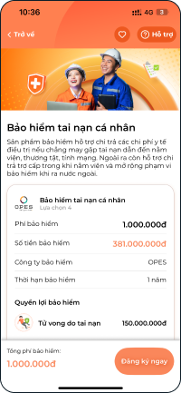
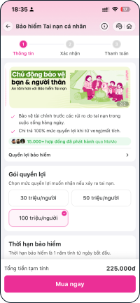
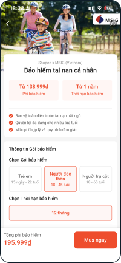
| IZion24 | Momo | Shopee | Our bet | |
|---|---|---|---|---|
| Targets gig workers | ||||
| Flexible, non-annual terms | ||||
| Owns the claim moment in-app |
Be became a symbol of hope for gig workers, celebrating their contributions and fostering a community that acknowledges every effort.
Collaborate with PO and PM to run driver survey
Then we ran a survey with 2.714 active beBike and beCar drivers. The numbers were clear.
95.7%
Many drivers find insurance important. Even with "very important" at the end, they still chose it intentionally.
90%
favor installment payments instead of a single annual payment
- Installments: 90%
- Annual lump-sum: 10%
57%
stated that the complexity of claims was their primary concern.
Top concern when considering insurance
52.1%
The clarity of the benefits was the key factor in the decision-making process.
Deciding factor when buying
Most-chosen price band for PA Insurance package
300.000VND / yearDriver interviews at Be hubs
Surveys don't reveal feelings. Data showed a preference for "per-trip" payments, but I needed to know why. I met with 15 drivers face-to-face, and two insights shifted my direction.
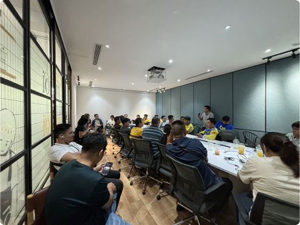
01. Weekly, not per-trip
Drivers liked "per-trip" for flexibility, but payouts are weekly. Money comes in weekly; bills should go out weekly.
02. Abandonment, not paperwork
Drivers weren't dreading forms. They were terrified of paying for a promise, and then losing the path back to it when they got hurt.
“Sợ bị đem con bỏ chợ.”
Scared of being left out in the cold, after trusting someone with what matters.
A phrase that came up repeatedly across driver interviews
The real problem wasn't claim complexity. It was the fear of being abandoned mid-claim.
03. CHALLENGEs NEED TO BE SOLVE
Three trust issues. Four failure modes to design for
Research gave me three things I had to solve.
01 - 📊 Survey
Cashflow mismatch
A 1.25M VND upfront payment doesn't match gig income. Payments should align with weekly cash flows
90% wanted installments for package
02 - 🗣️ Interview
It's about abandonment, not just paperwork.
Drivers didn’t mind filling out forms. What they really worried about was paying for a promise and then getting lost when they needed help.
57% Top fear: cited claims, not price.
03 - ⚙️ Platform
Auto-deduct drains wallet
bePartner's daily Cake transfer is part of normal driver flow. Auto-deduct insurance would frequently catch an empty wallet.
Drivers transfer daily wallets empty.
My design compass from this point forward:
Trust isn't sold. It's designed into every failure mode.
04. The decisions
How those risks became product decisions
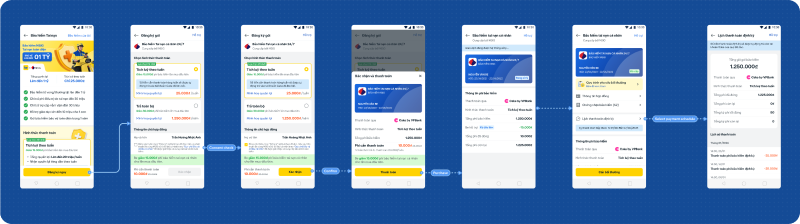
1. Cashflow mismatch → Weekly accumulation model
The challenge:
The default was to ship a standard annual premium: 1,250,000 VND/year, framed as the cheaper option.
I pushed back because research showed drivers wanted weekly payments.
The decision:
We shipped a model: 25,000 VND/week, auto-deducted from the driver wallet, with proportional coverage. To make the model understandable, I designed two key surfaces:
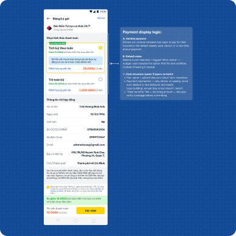
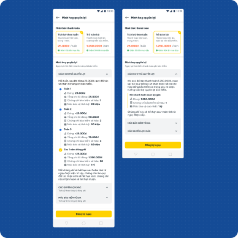
📉 final result
The trade-off was significant. Instead of one e-certificate per driver, the system needed to issue up to 50, increasing API calls and complexity. I accepted this due to the conversion risk.
5.11% CVR against a 2% target.
The weekly model held.
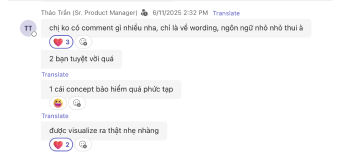
“Such a complex insurance concept, visualized so cleanly.”
Thảo Trần, Senior Product Manager, internal design review, June 2025
2. Wallet runs dry → Contract status system
The challenge:
If auto-collection failed, the simple solution was: failed payment → cancelled contract.
The decision:
A driver with 20 weeks paid shouldn't lose coverage due to week 21's empty wallet. I designed a four-state contract system:
- Active — payment collected, coverage running
- Warning — payment failed for fewer than 7 days, coverage maintained, driver prompted to top up
- Suspended — payment failed for more than 7 days, coverage paused, contract history preserved
- Reactivate — manual flow to restore coverage without losing prior paid history
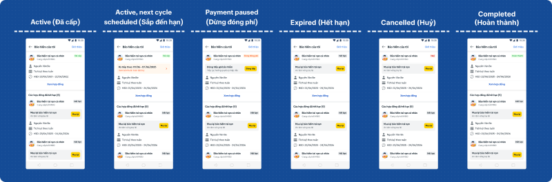
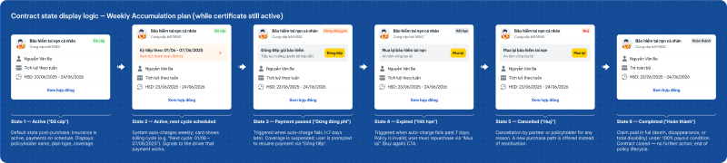
📉 final result
Shipped surfaces had specific contract screens and a reactivation flow. Drivers saw clear top-up instructions and could return without starting over.
98.22% recurring orders and 94.78% recurring users. Drivers who paused came back.
3. Claim anxiety → Native in-app claim guidance
The challenge:
Linking drivers to MSIG’s claim portal seemed easy, reducing effort and complexity. However, I rejected it as it risked abandonment: drivers paying Be, then facing an unknown third party at a critical moment.
The decision:
I designed a complete in-app claim guidance flow inside bePartner, including:
- Step-by-step claim instructions
- Required documents explained clearly
- Time estimates for each stage
- AQ content for edge cases anticipated by the Customer Service team
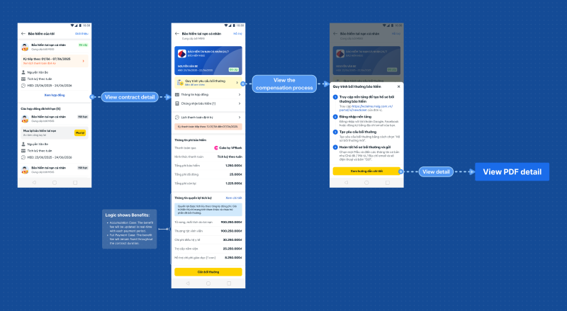
📉 final result
The trade-off was significant effort to translate insurance language into plain, driver-friendly guidance. But in insurance, the claim moment is where trust is truly tested.
Claim procedure was the top pre-purchase concern for 57% of drivers, yet post-launch claim-related CS escalations stayed below the projected baseline.
05. reflection
What I'd do differently
01. Add an upgrade path from weekly to annual.
Post-launch, the CS team got many requests from drivers to switch to the annual lump-sum model. Phase 1 didn't support this. An in-app upgrade flow is top priority for Phase 2.
02. Reorder the coverage timeline screen.
Move post-purchase to contract management. Provide a leaner path for conversion-ready users and an exploration area for detail-hungry users when they are receptive.
Recognition
The award came from colleagues who'd watched every decision get made, every edge case get specced, and every hot-fix go out. That made it mean more than most 🙆♀️🙆♀️🙆♀️
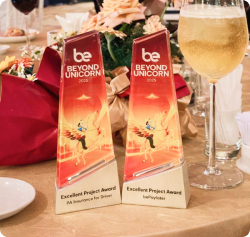